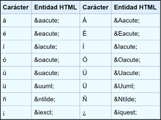

Los caracteres especiales como signo de puntuación, letras con tilde o diéresis o símbolos de escritura del lenguaje se deben convertir en entidad HTML para mostrarse en un navegador. La siguiente es una lista de caracteres españoles y su correspondiente entidad HTML:
